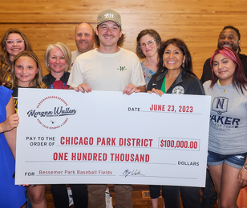
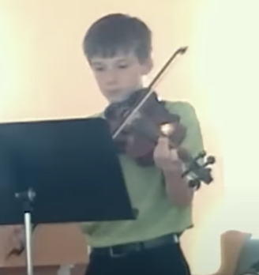

Interests and Hobbies
Beyond his music career, Wallen has connections to baseball, outdoor activities, and his Tennessee roots.


For more information, visit Morgan Wallen's official website.
Beyond his music career, Wallen has connections to baseball, outdoor activities, and his Tennessee roots.


For more information, visit Morgan Wallen's official website.